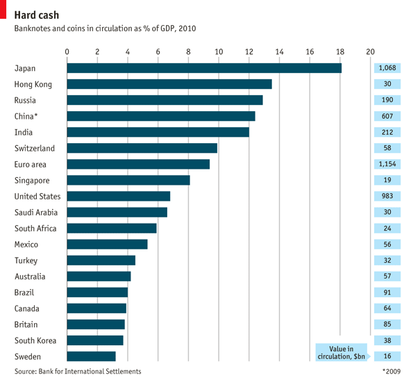
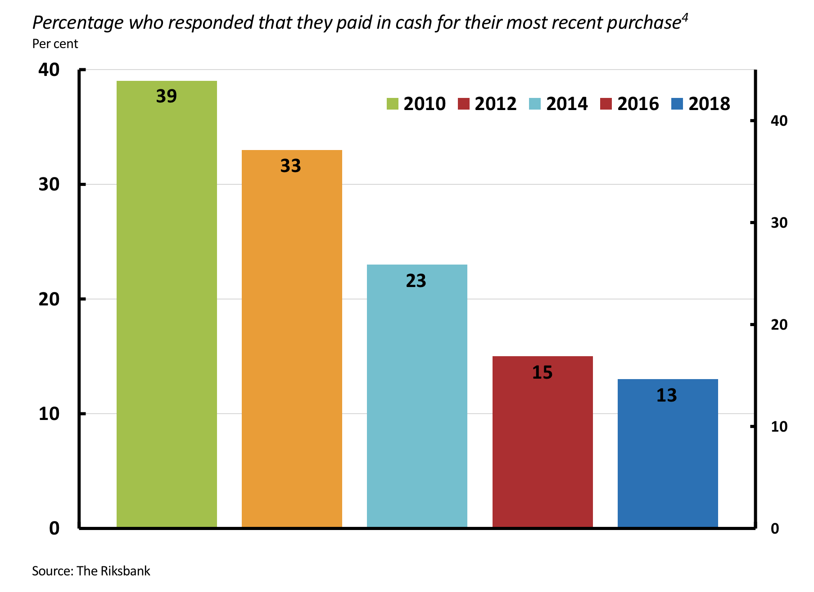
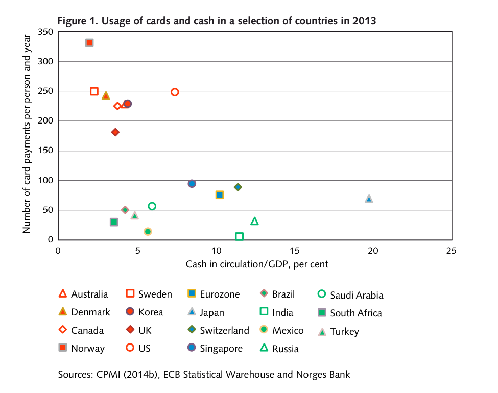
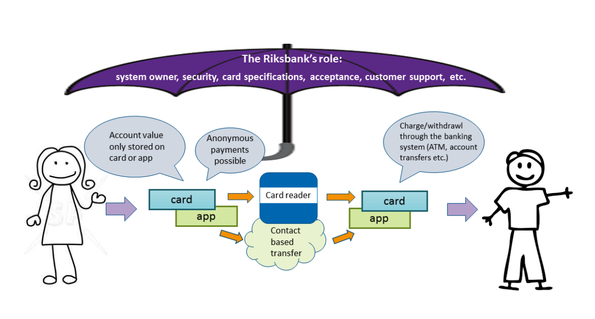
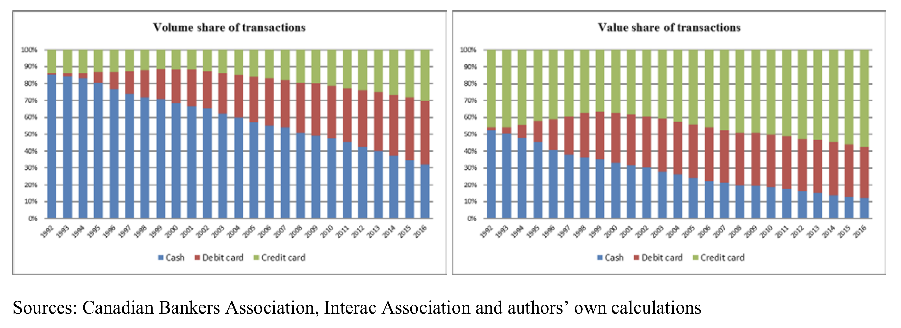

In 2009, a team of daring bank robbers used helicopters in an early morning raid on a cash depot in Västberga, a district in southern Stockholm. Armed with sledgehammers, small explosives, and several submachine guns, the robbers managed to unload roughly USD$5 million worth of Swedish kronor.
By then, Sweden was already considered a leader in financial technology and currency management. Yet the high-profile theft served as an invigorating moment. In the aftermath of the Västberga robbery, Sweden’s six main banks and national government resolved to stem the rising tide of financial crimes. The private banks formed a consortium to develop Swish, a financial application-based alternative to simplify commerce and cash exchanges for both individuals and companies. Similarly the Riksbank, Sweden’s central bank, submitted plans to enter the financial technology market. By developing a central bank digital currency called the e-kronor, central bank officials hope to further accelerate Sweden’s transition from physical cash to the digital medium.
Although Sweden was the first European country to print and issue modern-style banknotes, cash in the Scandinavian country has fallen into disuse.
During a string of transport and service industry robberies over the last decade, the descent of physical currency has rapidly intensified. Unions pushed for legislation to prevent violent crime and theft by reducing or removing cash from point-of-sale locations. Laws introduced to limit money laundering and tax fraud imposed a high cost for merchants handling cash. And after Panaxia, a cash-transport firm, collapsed spectacularly in 2012, retailers faced increased costs for receiving and depositing large sums of cash. All of these events contributed to a conscious decision by many merchants to refuse cash transactions--a policy made legal by a well-known piece of legislation called the Contract Law.

These recent developments played a large part in establishing Sweden as the most cash-free country in the world (Figure 1: Banknotes and Coins in Circulation (as a percentage of GDP), 2009). On a national level, Sweden is the only country where nominal demand for banknotes and coins has fallen in recent years. Similarly, in local banks, more than half of all branches no longer conduct cash transactions. Niklas Arvidsson, an industrial economist at the Royal Institute of Technology in Stockholm, stated that while “cash is still an important means of payment in many countries’ markets, that no longer applies here in Sweden. Our use of cash here is small, and it’s decreasing rapidly.”
A would-be thief learned this the hard way when his attempted bank robbery went awry in early 2013. The man, dressed in a black cap, drew a gun and demanded that the tellers load cash into a cloth bag. Instead, the bankers informed the man that the central Stockholm branch was, in fact, “cash-free.” The robber responded, according to reports, “Where else can I go?”
Going, Going…
While nearly 40 percent of Swedes made cash their mode of choice in 2010, only 13 percent paid using cash in their last transaction this year, according to a survey by the Riksbank, Sweden’s central bank. The bulk of payments today are made using debit bank cards.
And while most retailers continue to accept cash transactions, the ease of card and mobile payments, combined with the rise of e-commerce, has all but sealed the fate of the Swedish krona (Figure 2: Percentage who responded that they paid in cash for their most recent purchase). In fact, the Riksbank predicts that “in the not-too-distant future, Sweden may become a society in which cash is no longer generally accepted.”

Gone
Sweden has a storied history of leading the way in monetary modernization. It was a pioneer with widespread implementation of direct deposit in the 1960s and the practical elimination of personal cheques in the 1990s.
So too with cash, Sweden is ahead of many other developed nations. The high usage of card payments in the country is paralleled only by Norway (Figure 3: Usage of cards and cash in a selection of countries in 2013), a country with which it maintains close economic and monetary coordination. In fact, the two Scandinavian countries, alongside Denmark and Finland, launched a cooperative infrastructure plan in July of 2018 to dramatically accelerate currency exchange and account payments.

While most Swedes have adapted to the mobile wave, some have yet to keep up with the pace. Many services and amenities that used to require cash to operate are now accepting only mobile payments. In one shopping centre in Gothenburg, the change in payment at the public toilet went unnoticed by most, but was acutely felt by elderly and disabled shoppers. One 69-year old customer, when prompted by journalists, replied, “It’s just wrong.”
In response to the decline of physical cash, two viable alternatives to have emerged: Swish, a mobile payment system, and the soon-to-be released e-currency, the e-krona. The aim of these private and public projects is to keep up with shifting consumer and business preferences for monetary exchange, and to ameliorate potential negative externalities to vulnerable populations.
The Future: Swish
Swish was established as a unified payment system by six leading Swedish banks in 2012. It is a mobile payment system designed to simplify the way individuals and companies conduct commerce and exchange cash. While initially designed to handle only peer-to-peer money transfers, it was opened up to businesses and associations as a payment medium in 2014. By September 2018, Swish had 6.5 million users--more than half of Sweden’s population.
The scheme is fairly simple: private individuals verify their personal cellular numbers through a citizen identification system called BankID. Following the verification, individuals can send and receive money using their cellular number, or pay for goods and services with a QR code generated at the point-of-sale. All of these transactions take place without additional service charge.
Swish operates much like North American apps such as Venmo and Interac e-transfer, but with the following two distinctions: a) the ability to send cash directly from account to account, and b) the use of mobile numbers, instead of email, to send and receive transfers. Both features account for Swish’s widespread utilization and ease of use.
Most users recognize the simplicity that Swish introduces to payment; sidewalk shopping, fundraising drives, bill splitting, online payments, and second hand purchases are all made quickly and efficiently with Swish. As of now, many businesses are replacing other payment types with Swish; it eliminates both service charges and credit-authorization holds for customers and merchants respectively.
The success of Swish is currently understated in terms of dollars exchanged through its system. However its sheer user volume, ease of use, and trust in its founding institutions ensures that the payment application will continue to rise.
The Future: E-Krona
While most people have heard of digital cryptocurrencies such as BitCoin and Ethereum, many have not heard of a CBDC. Similar in theory to cryptocurrencies, but practical like physical cash, a CBDC or central bank digital currency is simply a “monetary value stored electronically that represents a liability on the central bank and can be used to make payments.” It operates like a physical dollar on a smartphone, but unlike crypto-currencies, has the financial backing of the government’s central bank.
The Riksbank, Sweden’s central bank, is currently developing a CBDC to give consumers more choice in method and greater trust in security of their digital payments (Figure 4: The Riksbank’s role in a value-based e-krona). The digital currency, called the e-krona, would not replace physical cash, but would serve as an identical substitute for government-minted banknotes and coins. It would represent a direct claim on the central bank, and would combine trust in the Swedish government with real-time, unimpaired access to digital cash.

A payment with an e-krona would look similar to a payment with physical cash; individuals would access their e-krona bank accounts on their mobile phones or through a physical card to pay for goods and services. Peer-to-peer transfers or customer-merchant transactions would operate on the same principles. The key difference is that e-krona exchange occurs without a third-party, such as Swish or MasterCard, between the customer and merchant.
In Sweden, several industry factors led to the development of the e-krona. As with many digital and electronic technologies, the fractured mobile payment market tends toward consolidation and monopoly.
“The market,” the Riksbank stated in a 2017 report, “will gradually move towards...actors who mediate large amounts of payments and those whose payment services are generally accepted. High and perhaps increasing consolidation...increase[s] the risk of significant shocks to the payment system should part of the infrastructure be incapacitated.” Therefore, ensuring adequate and timely access to central bank money is a major concern.
In addition, the impacts of increased digitization have some vulnerable sectors of Sweden’s population concerned as well. Many point to the disproportionate impacts that a continued transition toward cashless transactions could have on older consumers and the visually impaired. To mitigate some of the concerns of these populations, the e-kronor system is designed to include a user-friendly interface and additional audiovisual capabilities.
Canada: What about an E-Loonie?
The Bank of Canada (BoC) has also weighed the possibility of developing a CBDC. In two working papers published in November 2017 and July 2018, the BoC outlined the perceived benefits and potential costs.

Surprisingly, Canadian monetary management and consumer preferences are quite comparable to Sweden. Like Sweden, Canadians have continually decreased their volume and value of cash transactions. In 2015, cash represented roughly half the volume, but only a quarter of the value of all purchases in Canada. As a nation, Canada has among the lowest number of banknotes and coins in circulation as a percentage of GDP across the globe (Figure 1). These indicators suggest that cash may no longer be the prefered transaction mechanism for consumers.
Similarly on the retail side, the BoC noted that merchants face a high cost for accepting credit and debit payments—a cost of roughly $7.7 billion in 2014. Among the benefits of a CBDC over other non-cash payments (such as credit or debit) is the lower cost for merchants, compared to non-cash third-party intermediaries. In a BoC study, two researchers found that “with no transaction fees charged by the central bank, the benchmark CBDC would probably be less expensive for merchants than cash and credit cards.”
While Canadian banking officials are not nearly as far into the development pipeline as the Swedish central bank, readers can expect evolving positions on the topic over the next few months. Research by the Digital Currency Research Initiative at the Bank of Canada suggests that even though cash represents an decreasing amount of total transactions, a government-issued cash or cash-substitute still remains salient for consumers.
Governor of the Bank of Canada, Stephen Poloz, noted likewise, “If people prefer to have it in digital form,” he stated, ”then that’s what [central banks] will do.”